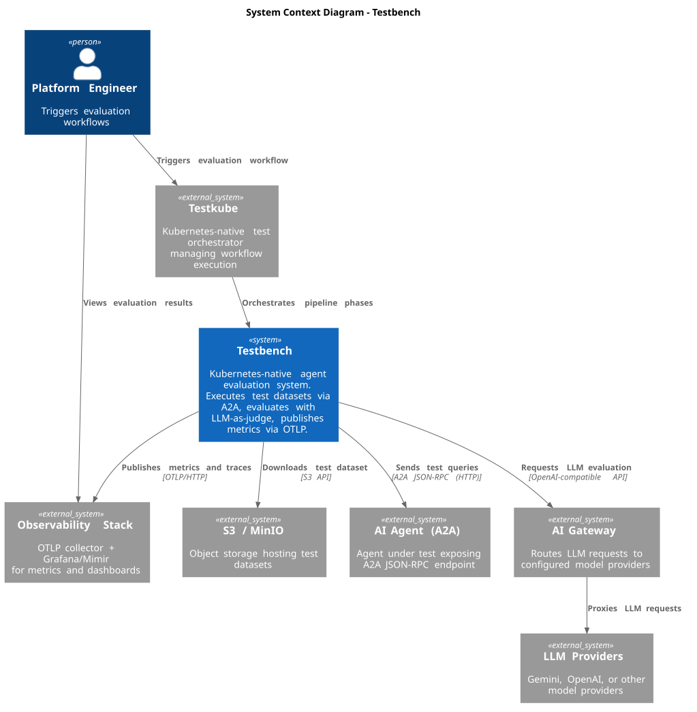

System Scope and Context
Context Diagram
The following C4 context diagram shows the Testbench system and its external dependencies.

External Systems
S3 / MinIO (Dataset Source)
Object storage providing test datasets. The Testbench downloads datasets via the S3 API.
Testkube also uses S3-compatible storage (MinIO by default) to store test artifacts.
AI Agent (A2A)
The agent under test, which must expose an A2A JSON-RPC endpoint. The Testbench sends test queries and records the agent’s responses. Multi-turn conversations are supported through A2A context ID state management.
AI Gateway
An OpenAI-compatible API proxy that routes LLM requests to configured model providers (e.g., Gemini, OpenAI). Used during the Evaluate phase for LLM-as-a-judge metric calculation. Configured via OPENAI_BASE_URL environment variable.
LLM Providers
External model providers (Google Gemini, OpenAI, etc.) accessed through the AI Gateway. The specific model is configurable per evaluation run (e.g., gemini-2.5-flash-lite).
Observability Stack (OTLP)
An OpenTelemetry-compatible backend for metrics and traces. The Testbench publishes:
-
Traces — per-query spans from the Run phase with HTTP auto-instrumentation
-
Metrics — per-sample evaluation gauges from the Publish phase
Testkube
Kubernetes-native test orchestrator that manages the execution of evaluation workflows. The Testbench is packaged as reusable TestWorkflowTemplate CRDs that Testkube composes into complete pipelines. Testkube provides workflow-level variables (workflow.name, execution.id, execution.number) used for metric labeling and traceability.
Interaction Patterns
-
Dataset ingestion — Setup phase downloads dataset from S3/MinIO
-
Agent querying — Run phase sends each dataset entry to the agent via A2A protocol, recording responses and OpenTelemetry trace IDs
-
LLM-as-judge evaluation — Evaluate phase uses configured metrics with an LLM (via AI Gateway) to score each response
-
Metrics publishing — Publish phase exports per-sample metric gauges to the OTLP endpoint for visualization in Grafana